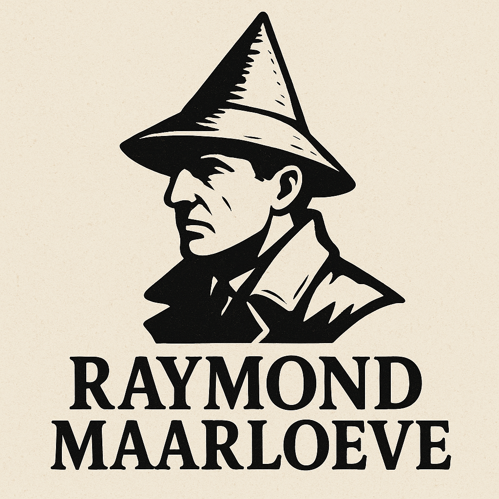

- Generated by
 1.9.6
1.9.6
|  |
Raymond Maarloeve
|
| CBuildingSetup | Configuration for building prefabs with weighting and limits |
| CBuildingSpawner | Responsible for spawning buildings on available map tiles, based on weighted probability and placement rules |
| CCalculateRelevanceDTO | Represents a request to calculate the relevance of a new memory based on core and obtained memories. This DTO is used for prompting the LLM to evaluate how relevant a new memory is in the context of an NPC's decision-making process |
| CCharacterDTO | DTO class used to describe generated Character in GeneratedHistoryDTO object |
| CChatRequestDTO | Data Transfer Object for sending chat requests to the LLM |
| CChatResponseDTO | Data Transfer Object for receiving chat responses from the LLM |
| CClueSetup | Configuration for clue prefabs |
| CClueSpawner | Responsible for spawning a clue near the building of the murderer NPC |
| CConvertHistoryToBlocksDTO | DTO class used to obtain history blocks generated by GameManager::ConvertHistoryToBlocks object |
| CCurrentEnvironment | Represents a single current environment option of an NPC, including the decision to be made and the associated game object |
| CCurrentEnvironmentDTO | Represents the CurrentEnvironment DTO object used for prompting the LLM. This object contains the action to be performed and the distance to the target |
| CDecorationSpawner | Responsible for placing decorative elements (e.g. trees, rocks) on available tiles in the terrain |
| CGameConfig | Represents the configuration for the game, including settings for the LLM server, window dimensions, models, and NPCs. This configuration is provided by the game launcher |
| CGeneratedHistoryDTO | DTO class storing generated story with characters from Narrator LLM derived from GameManager::GenerateHistory prompt |
| ▼CIBeginDragHandler | |
| CHistoryBlockDrag | |
| ▼CIDecision | Defines the Decision for the NPC Decision System |
| CIdleDecision | Represents a decision for an NPC to idle for a specified duration |
| ▼CVisitBuildingDecision | Represents a decision for an NPC to visit a building. Handles navigation, waiting, and optional disappearance behavior |
| CGetAleDecision | Represents a decision for an NPC to visit a building to get ale and eat |
| CGetWaterDecision | Represents a decision for an NPC to visit a building to get water |
| CGoToSleepDecision | Represents a decision for an NPC to go to sleep |
| CPrayDecision | Represents a decision for an NPC to visit a building and perform a praying action |
| CWaitForLLMDecision | Represents a decision that waits for a LLM-generated decision |
| CWaitForLLMReadyDecision | Represents a decision that waits for the LLM server to be ready |
| CWalkDecision | Represents a decision for an NPC to walk to a random destination within a specified radius |
| ▼CIDecisionSystem | Interface for a decision-making system for NPCs |
| CLlmDecisionMaker | Decision-making system for NPCs that uses a Large Language Model (LLM) to determine the next action based on the current environment and NPC state. This system interacts with the LLMServer to request decisions and processes the responses to guide NPC behavior |
| CNullDecisionSystem | Stub IDecisionSystem implementation for debugging purposes |
| CIdleDTO | Represents the idle state of an NPC in the decision-making system. This state includes core memories, obtained memories, current environment, needs, and the stopped action. This DTO is used for prompting the LLM to understand the NPC's current context |
| ▼CIDragHandler | |
| CHistoryBlockDrag | |
| ▼CIDropHandler | |
| CYourNamespace.SlotDropHandler | Component responsible for handling UI drop events onto this slot. When an object is dropped, it is parented to this slot and centered |
| ▼CIEndDragHandler | |
| CHistoryBlockDrag | |
| CLoadModelDTO | Represents a request to load a model into the system |
| CMessage | Represents a single message in a chat conversation |
| CMessageDTO | Represents a response message of the LLMServer |
| CModelConfig | Represents the configuration for an individual LLM used in the game. This configuration is provided by the game launcher and is part of the JSON structure managed by GameConfig |
| ▼CMonoBehaviour | |
| CBuildInfoUI | |
| CBuildingData | Component responsible for tracking a building's tile occupation, type, and association with NPCs. Provides methods for assigning occupied tiles and marking the main tile for the building |
| CCameraFollow | Handles the camera movement and positioning to follow a target. Supports smooth transitions and interaction-specific camera behavior |
| CDayBoxManager | Manages the UI elements for displaying the current day and time in the game. Provides methods to update the day and hour text fields dynamically |
| CDayNightCycle | Manages in-game time visuals and logic |
| CDialogBoxManager | Manages the dialog box UI for player interactions with NPCs. Handles input, output, and communication with the LLM server |
| CGameManager | |
| CHistoryBlock | Represents a history fragment block used in the mini-game. Contains a flag indicating whether this block is a genuine fragment or a decoy |
| CHistoryBlockDrag | |
| CLlmManager | Manages communication with the LLM server, including model registration, loading, unloading, and chat requests. Handles request queuing and ensures only one POST request is processed at a time |
| CLoadingScene | Handles the loading process of a scene, including updating a progress bar and displaying loading messages |
| CMainMenuManager | Manages the main menu and settings UI, including scene transitions, graphics and audio settings, and PlayerPrefs persistence |
| CMapGenerator | Responsible for generating the game map, including terrain layout, building placement, wall construction, decoration, and clues |
| CMiniGameManager | Singleton manager for the “history fragments” mini‐game. Controls showing the mini‐game UI, populating suspects, generating draggable blocks, evaluating the player’s selection, and displaying the result |
| CMinimapCameraScript | |
| CNPC | Represents a Non-Player Character (NPC) in the game world. Handles decision making, vision, memory, and interaction logic for the NPC |
| CPlayerController | Manages player movement, interaction with NPCs, and state transitions. Handles gravity, animations, and camera behavior during interactions |
| CSmartMeshColliderAdder | Converts all direct children of this GameObject from SkinnedMeshRenderers to static meshes with MeshFilters, MeshRenderers, and MeshColliders attached |
| CYourNamespace.SlotDropHandler | Component responsible for handling UI drop events onto this slot. When an object is dropped, it is parented to this slot and centered |
| CNeedDTO | Represents a need of an NPC in the decision-making system. Each need has a string identifier and a weight that indicates its importance. This DTO is used for prompting the LLM to understand the NPC's needs |
| CNpcActionEvent | Represents an event describing an action performed by an NPC |
| CNpcConfig | Represents the configuration for an individual NPC used in the game. This configuration is provided by the game launcher and is part of the JSON structure managed by GameConfig |
| CObtainedMemory | Represents a memory obtained by an NPC in the decision-making system. Each memory has a string identifier and parameters that indicates its importance, recency and relevance |
| CObtainedMemoryDTO | Represents a memory obtained by an NPC in the decision-making system. Each memory has a string identifier and a weight that indicates its importance. This DTO is used for prompting the LLM to understand the NPC's experiences and how they influence its decisions |
| CRegisterDTO | Data Transfer Object for registering a model with the LLM server. Contains the model's unique identifier and the file path to the model on disk |
| ▼CStateMachineBehaviour | |
| Cfootstep_manager_npc | Handles footstep sounds for NPCs during animation states using StateMachineBehaviour. Plays two footstep sounds at specified points in the animation loop |
| CStatusDTO | Represents the status of the system, including health and available models |
| CTile | Represents a single map tile with spatial and classification metadata |
| CUnloadModelRequestDTO | |
| CWallSpawner | Responsible for spawning the outer walls, towers, and gate around the map boundary |
| CWallsSetup | Configuration for wall prefabs |